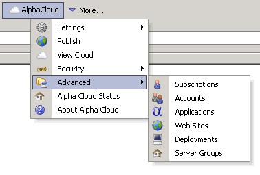
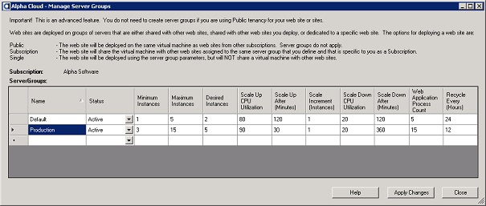

Alpha Cloud - Alpha Anywhere Developer's Guide
Understanding Server Groups
Understanding Server Group Parameters
Understanding Automatic Scaling
Managing Server Groups
A server group is a named set of values that you can create and manage to optimize your cloud deployments and group web sites.
You can create any number of uniquely named server groups and each has its own set of values for tuning scaling and IIS worker processes.
Each server group has set of values that are used to deploy web sites that have Subscription or Single tenancy.
When you manage your web site, you select the server group from which you want to assign scaling and IIS parameters.
For web sites that have a Subscription tenancy, a server group associates web sites together when assigning them to servers.
The deployed server that the web sites are automatically assigned to will use the parameters from the server group for auto-scaling.
The applications deployed to the web sites will use the IIS parameters to manage their IIS application pools.
For web sites that have a Public tenancy, the server group is ignored.
Alpha Cloud creates a server group called "Default" for each subscription.
The initial values are the current defaults for each of the settings.
You can change the values to meet your needs.
Each server group has the following values.
- Name
- An identifier that is unique within your subscription.
- Status
- Either "Active" - meaning the server group is available for use, or "Disabled" meaning the server group is not available.
Note: Disabling a server group that has web sites assigned to it can cause web sites to be stopped.
- Minimum Instances
- The minimum number of server instances to be running at any time.
Setting this value to at least two means that if one of your servers fails, there is another one available and running to pick up the load.
This can greatly reduce the recovery time, because starting a server can take some time.
- Maximum Instances
- The maximum number of server instances to be running at any time.
Setting this value to a reasonable number will keep your costs limited.
- Desired Instances
- The typical number of server instances to be running at any time.
- Scale Up CPU Utilization
- The average utilization (as a whole number percent) that the CPU needs to be above for a sustained period of time before adding additional servers (scaling up).
- Scale Up After (Minutes)
- How many minutes the CPU must be over the Scale Up CPU Utilization before adding additional servers (scaling up).
- Scale Increment (Instances)
- How many servers to add when scaling up or remove when scaling down.
- Scale Down CPU Utilization
- The average utilization (as a whole number percent) that the CPU needs to be below for a sustained period of time before removing (scaling down).
- Scale Down After (Minutes)
- How many minutes the CPU must be under the Scale Down CPU Utilization before adding removing servers (scaling down).
- Web Application Process Count
- How many processes the application pool for a deployed application should create.
Use this value to tune your servers.
An application that is very CPU intensive should not try to respond to too many requests at once.
An application that is somewhat bursty (short, intermittent requests, with lots of database queries) may perform better with more processes.
- Recycle Every (Hours)
- The default of 24 hours is a reasonable number and will restart a process once a day.
If your application tends to use a lot of memory or produces a lot of errors, you may want to restart more frequently.
If your application is only very lightly used, it may be reasonable to restart it every few days or even weekly.
Note: Restarting a process in the application pool does not mean that the server will be unavailable.
When IIS restarts application pool processes, it waits until the new process is available before stopping the old one.
Requests that are being processed get a change to complete.
This is a very smooth process that not affect your web site responsiveness at all.
In a traditional data center, capacity planning is a very expensive and error prone operation, even with large data centers where things tend to even out.
When new servers are needed they must be allocated form a pool of physical or virtual machines.
Adding a new machine means purchasing, installing, and configuring a physical machine.
Cloud computing simplifies the process of provisioning a new virtual machine by supporting automated provisioning and (in many cases) automatically adding a server when the load grows and removing servers when it drops back down.
Alpha Cloud has a load balancer for each group of servers and the load balancer and the scaling engine provided by the infrastructure (Amazon AWS in our case) works with the load balancer to keep track of instance load and machine failures.
If a machine fails, it is replaced immediately.
If a scaling rule fires, a machine may be added or removed from the group.
The parameters described above instructing the scaling engine how to add and remove servers based on the CPU load.
Scaling works as follows
- Scaling Up
-
When the average CPU utilization for the machines in a group exceeds the scale up threshold (percentage) for a certain number of minutes, one or more instances are added.
For example:
If the average CPU utilization for the machines in a group exceeds 80% for 60 minutes, add 1 instance (virtual machine).
- Scaling Down
-
When the average CPU utilization for the machines in a group falls below the scale down threshold (percentage) for a certain number of minutes, one or more instances are terminated.
For example:
If the average CPU utilization for the machines in a group falls below 20% for 120 minutes, terminate 1 instance (virtual machine).
Automatic scaling is a complex operation managed by the infrastructure that Alpha Cloud runs on.
As a result, there are many options available, and we have exposed a few key values to help you tune your application performance.
In general, you should be able to use the default values.
Poor tuning on your part may result in reduced availability or excessive cost.
It is important not to scale up or down too frequently.
Each machine that is started is an additional cost.
Removing a machine too quickly can cause the server group to seem unresponsive when a burst of traffic is encountered.
It is a good idea not to have the configuration change more than once or twice a day under normal load.
Note: The default parameters reasonable starting points.
If you find yourself tuning them, make sure that you have a good base measure of responsiveness taken over a period of time before you start.
After making a change, retake those measurements over the same period of time (probably over several days and at different times of the day.
You can view or make changes to server groups using the Manage Server Groups Alpha Cloud dialog.
If you have permission to maintain server groups for a subscription, you can add, enable or disable and set parameters for a server group.
To view or change server groups:
- Click the Alpha Cloud toolbar icon on the web control panel in Alpha Anywhere and select "Advanced" and then "Server Groups".

- To add a new server group, click in the empty row at the bottom of the grid (with a * to its left), name your new group and change any values you choose to.
- To enable or disable a server group, select either "Active" or "Disabled" from the "Status" drop down list.
- Change any values required on any of the server groups.
- Click the button entitled "Apply Changes" to update the Alpha Cloud.

View a Full Sized Image
{kind=link}